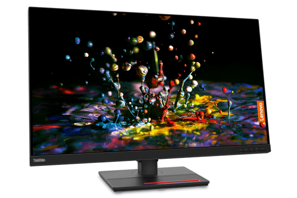

Monitor ThinkVision P32p-20
Monitor LENOVO
Jestliže před monitorem trávíte podstatnou část dne z pracovních nebo soukromých důvodů, pak je nezbytné zaměřit se na výběr správného typu pro zefektivnění a zpříjemnění vaší práce. Za zkoušku poté stojí LCD monitor Lenovo s úhlopříčkou 31,5", který by mohl být přesně to, co hledáte. Rozlišení typu 4K zajistí špičkový vizuální zážitek. Bude tak skvělou volbou pro práci s grafikou. Antireflexní povrchová úprava displeje bude bránit odleskům okolního osvětlení.
Barva
- 35
- 36
- 37
- 38
- 39
- 40